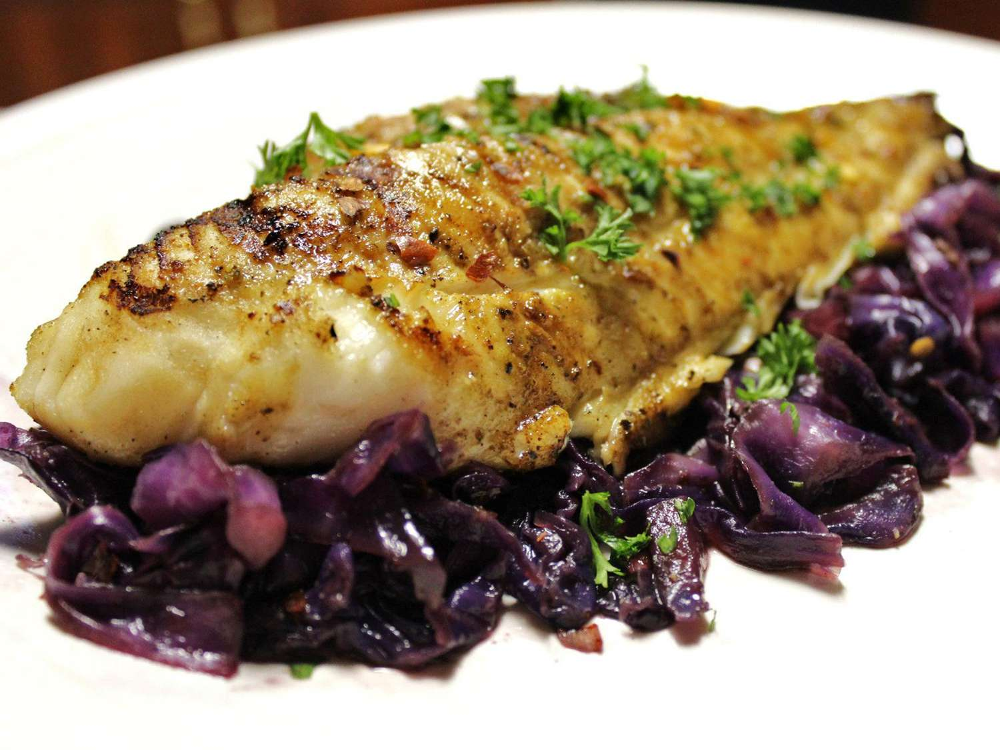

Grilled Fish Steaks

Description
The nutrition data for this recipe includes information for the full amount of
the marinade ingredients. Depending on marinating time, ingredients, cooking
method, etc., the actual amount of the marinade consumed will vary.
Ingredients
- 6 tablespoons olive oil
- 1 tablespoon fresh lemon juice
- 1 tablespoon chopped fresh parsley
- 1 clove garlic, minced
- 1 teaspoon dried basil
- 1 teaspoon salt
- 1 teaspoon ground black pepper
- 2 (6 ounce) fillets halibut
Steps
- Combine olive oil, lemon juice, parsley, garlic, basil, salt, and pepper together
in a stainless steel or glass bowl.
- Place the halibut fillets in a shallow glass dish or a resealable plastic bag; pour
the marinade over the fish. Cover or seal and place in the refrigerator for 1 hour,
turning occasionally.
- Preheat an outdoor grill for high heat and lightly oil the grate. Set grate 4 inches
from the heat.
- Remove halibut fillets from marinade and drain off any excess.
- Cook on the preheated grill until fish flakes easily with a fork, about 5 minutes per
side.
Back to top
Back to Homepage